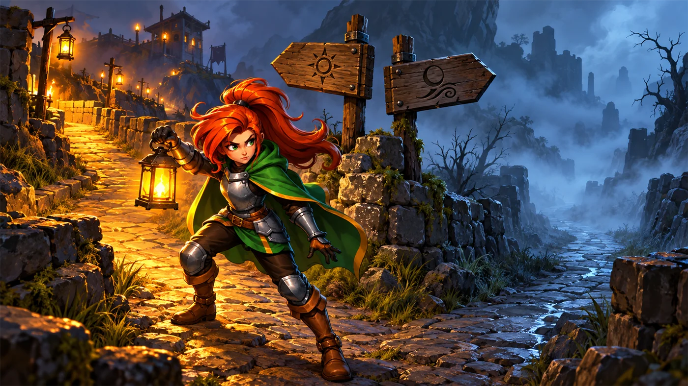
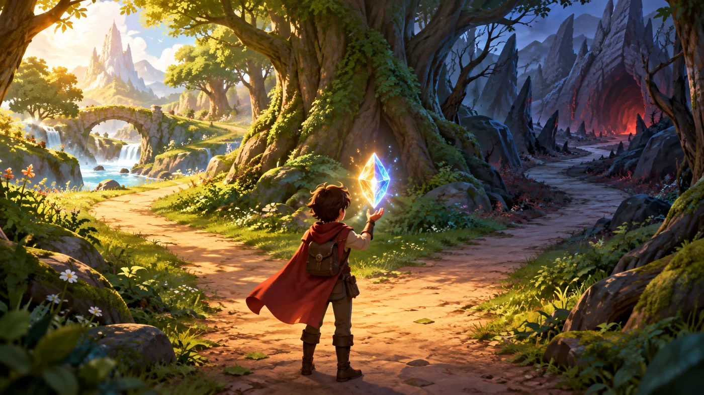
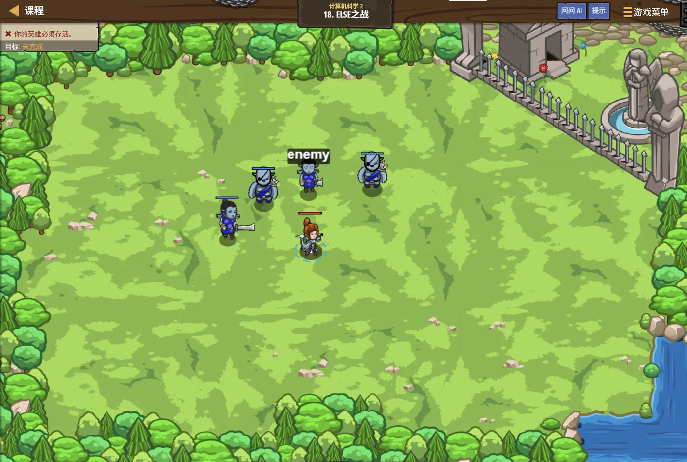

故事：走廊里的尖刺密布，直着走肯定撞上。塔林说：
该拐弯的时候就要拐弯。
你仔细观察——每当前方有危险，就必须换一个方向。
对，他点头，程序也一样：先判断，再行动。
扣哒考级 · GESP C++ 一级 · 第 5 单元 | 烛火岗哨 CANDLEWATCH OUTPOST
岔路口的抉择 分支结构：做选择
Branching: Making Choices

塔林
铁壁骑士 · 你的向导
岗哨外有一条石阶路，走到一半突然分成两条：左边通向崖边，右边通向密林。
风里传来野兽的低吼。塔林把火把递给你：别急着迈步。 先看清楚条件——风声是从哪边来的？
你听了一瞬，转向右边。
对。他点头，这就是程序里最重要的能力：判断。
风里传来野兽的低吼。塔林把火把递给你：别急着迈步。 先看清楚条件——风声是从哪边来的？
你听了一瞬，转向右边。
对。他点头，这就是程序里最重要的能力：判断。
塔林 · 铁壁骑士
前四个单元，程序都是一条直线走到黑。可真实世界里，大部分事情都要"看情况"——下雨就带伞，天冷就加衣。
这一单元，我们让程序也学会这一手：根据条件，走不同的路。

assets/illustrations/py-L1-05-01_crossroads.webp
【配图位】雾中的岗哨岔路口：两块木质路牌立在崖边，一名新兵提着灯在岔口犹豫——一条路被灯光照亮、一条路隐入阴影；冷蓝色雾气与暖橙色灯光形成对比。
0 单元导语与目标
Unit Overview
0.1 学习目标
1学完这个单元，你将能……
- 说清分支结构的作用与执行流程
- 正确写出
if、if-else、else if - 知道花括号什么时候可以省、什么时候不能省
- 用嵌套判断处理两层条件
- 看懂三目运算符
? :的结果 - 预测一段分支程序的输出
2对标 GESP 考纲（C++ 一级）
- 掌握
if语句与条件表达式 - 掌握
if-else与else if多分支结构 - 了解嵌套分支与三目运算符
- 了解
switch的基本写法与break的作用 - 考核目标：能写出分支程序，并准确判断给定程序的输出
0.2 考纲对照
| 本单元小节 | 对应考纲条目 | 真题常考形式 |
|---|---|---|
| 2 最简单的 if | if 语句 | 条件不成立时，括号里的语句会不会执行 |
| 3 if-else | 二分支结构 | 给两个输入，问走哪个分支、输出什么 |
| 4 else if | 多分支结构 | 给一个分数或等级，问落在哪一段 |
| 5 嵌套判断 | 分支的嵌套 | 两个条件同时判断时的输出 |
| 6 三目与 switch | 其他分支写法 | a > b ? a : b 的结果 |
1 为什么要做选择
Why Branch
1.1 一条直路走不通
图 2（SVG）：分支结构的执行流程
打个比方：
分支结构就像走在路上遇到一个岔路口：先抬头看一眼路牌（判断条件），再决定往哪边迈步。
关键在于——你永远只能走一条路，不可能两条都走。
程序也是这样：条件成立走
关键在于——你永远只能走一条路，不可能两条都走。
程序也是这样：条件成立走
if 那边，不成立走 else 那边，绝不会两边都走一遍。

assets/illustrations/cpp-L1-05-02_branch_paths.webp
【配图位】雾中的石砌岔路口：路口正上方悬着一个巨大的发光菱形判断框，菱形两条下边各引出一条光箭头，分别指向左右两条岔路；此刻只有右边那条路被照亮、左边那条仍隐在阴影里；一名新兵提着灯站在菱形下方抬头张望。扣哒世界卡通风格，冷蓝雾气与暖橙灯火对比。
1.2 条件是什么
条件就是上一单元学的关系表达式或逻辑表达式，它的结果只有两种：成立（真）与不成立（假）。
| 条件写法 | 什么时候成立 |
|---|---|
a > b | a 比 b 大 |
a == 0 | a 等于 0（注意两个等号） |
a % 2 == 1 | a 是奇数 |
a >= 60 && a <= 100 | a 在 60 到 100 之间 |
记住这句话：
条件的值是"真"或"假"，条件成立就执行 if 后面的语句，不成立就跳过。
在 C++ 里，"真"就是非 0，"假"就是 0——所以写
在 C++ 里，"真"就是非 0，"假"就是 0——所以写
if (1) 永远成立，if (0) 永远不成立。
2 最简单的 if
The if Statement
2.1 只有一个分支
写法：条件成立才做，不成立就跳过
C++
int hp = 30;
if (hp < 50) { // 条件成立吗？
cout << "血量偏低" << endl; // 成立 → 执行这一句
cout << "注意防守" << endl;
}
cout << "继续战斗"; // 这一句无论如何都会执行OUTPUT 血量偏低
注意防守
继续战斗
注意防守
继续战斗
if 括号里的条件，必须是一个整体：
而且括号后面一定不要加分号——写成
if (hp < 50) ✔ if hp < 50 ✘（没有括号）而且括号后面一定不要加分号——写成
if (hp < 50); 会变成"条件成立时什么都不做"，
后面的花括号就永远执行了，这是很隐蔽的错误。
2.2 花括号的规矩
只写一句可以省花括号，但建议永远写上
C++
int x = 5;
// 写法一：只有一句，可以省花括号
if (x > 0)
cout << "正数";
// 写法二：多句，必须加花括号
if (x > 0) {
cout << "正数" << endl;
cout << "且大于零";
}
// 写法三：省了花括号却写了两句 —— 第二句永远会执行！
if (x > 0)
cout << "正数" << endl;
cout << "这一句不受 if 控制"; // ★ 危险口诀
if 只管到"第一条语句"；想管多句，就用花括号把它们包起来
打个比方：
花括号
想让 if 把好几件事都管起来？把它们一起装进书包：
养成"永远写花括号"的习惯，就不会犯这个错。
{ } 就像一个书包。if 这个人每次只肯拿一样东西——你不在它后面放书包，它就只带走紧跟着的第一件，"第二件、第三件"全留在原地。想让 if 把好几件事都管起来？把它们一起装进书包：
{ … }。养成"永远写花括号"的习惯，就不会犯这个错。
强烈建议：
不管 if 后面是一条语句还是多条，都加上花括号。
这样以后往里加语句时，不会出现"以为在 if 里、其实在外面"的错误。
考试里看到"没有花括号的多行 if"，要立刻警觉：只有第一句归 if 管。
这样以后往里加语句时，不会出现"以为在 if 里、其实在外面"的错误。
考试里看到"没有花括号的多行 if"，要立刻警觉：只有第一句归 if 管。
3 if-else：二选一
if-else
3.1 成立走这边，否则走那边
两条路，必走一条
C++
int n;
cin >> n;
if (n % 2 == 0) {
cout << "偶数";
} else {
cout << "奇数";
}输入 8 → 输出 偶数 输入 7 → 输出 奇数
打个比方：
条件成立走
所以 else 后面不用再写条件——它的意思就是"上面那些都没轮到，剩下的都归我"。
if-else 就像校门口的两个闸机口：每个同学都必须走其中一个，而且只能走一个。条件成立走
if 这边，其余所有情况统统走 else 那边。所以 else 后面不用再写条件——它的意思就是"上面那些都没轮到，剩下的都归我"。
if-else 的三条要点：
① else 后面不写条件——它的意思是"上面所有条件都不成立"。
② 两个分支只会执行一个，绝不会都执行、也不会都不执行。
③ else 必须紧跟 if，中间不能插别的语句。
① else 后面不写条件——它的意思是"上面所有条件都不成立"。
② 两个分支只会执行一个，绝不会都执行、也不会都不执行。
③ else 必须紧跟 if，中间不能插别的语句。
3.2 真题常考的 N 与 M
经典题型：比较大小时输出什么
C++
int N, M;
cin >> N >> M;
if (N > M)
cout << "A " << (N - M);
else
cout << "B " << (M - N);
输入 4 3 → N>M 成立 → 输出 A 1
输入 3 4 → 不成立 → 输出 B 1
输入 3 3 → 不成立（注意！相等时走 else）→ 输出 B 0
输入 4 4 → 不成立 → 输出 B 0
输入 3 4 → 不成立 → 输出 B 1
输入 3 3 → 不成立（注意！相等时走 else）→ 输出 B 0
输入 4 4 → 不成立 → 输出 B 0
相等的时候走哪边？
条件写的是
这是真题专门设置的一个坑：很多人以为"相等"应该单独处理，其实它会掉进 else。
想让相等时走 if 一边，就必须写成
N > M，相等时它不成立，所以会走 else。这是真题专门设置的一个坑：很多人以为"相等"应该单独处理，其实它会掉进 else。
想让相等时走 if 一边，就必须写成
N >= M。
4 多分支：else if
else if
4.1 一个接一个地判断
三个及以上的岔口
C++
int score;
cin >> score;
if (score >= 90) {
cout << "A";
} else if (score >= 80) {
cout << "B";
} else if (score >= 60) {
cout << "C";
} else {
cout << "D";
}
输入 95 → A 输入 85 → B 输入 70 → C 输入 50 → D
图 4（SVG）：else if 的执行顺序
assets/illustrations/cpp-L1-05-03_multibranch_lanterns.webp
【配图位】岗哨长廊的一侧依次悬挂着一排石灯笼，每盏灯笼的底座刻着一个条件符文（从上到下分别是"≥90""≥80""≥60"，最后一盏刻着"其他"）；一名新兵从左往右走过，前面三盏都暗着，第四盏仍未走到；第二盏灯笼正微微发亮并有光晕扩散，暗示"遇到第一个成立的就停下"。扣哒世界卡通风格，长廊暖光与石壁冷色对比。
打个比方：
哪一盏先亮，你就停在哪一盏，后面的连看都不看。
所以顺序特别重要——把"条件很宽"的灯笼挂在前面，后面那些就永远轮不到亮了。
else if 就像走廊里挂着一排条件灯笼，你只能从左往右挨个看：哪一盏先亮，你就停在哪一盏，后面的连看都不看。
所以顺序特别重要——把"条件很宽"的灯笼挂在前面，后面那些就永远轮不到亮了。
4.2 顺序很重要
顺序写反了，结果就错了
C++
int score = 95;
// 正确写法：从大到小
if (score >= 90) cout << "A"; // 95 满足，输出 A ✔
else if (score >= 80) cout << "B";
else cout << "C";
// 错误写法：从小到大
if (score >= 60) cout << "C"; // 95 也满足，直接输出 C ✘
else if (score >= 80) cout << "B";
else cout << "A";原因
95 >= 60 同样成立，程序一成立就跳出去了，根本轮不到后面的判断
再打个比方：
这就像筛豆子，先用孔最大的筛子，那不管豆子大小全掉下去了，后面的筛子就白摆了。
所以要先用"孔最小的筛子"（最严的条件）。
分数段的例子：先问"够不够 90"，再问"够不够 80"，最后才问"够不够 60"——从小到大反过来写就错了。
所以要先用"孔最小的筛子"（最严的条件）。
分数段的例子：先问"够不够 90"，再问"够不够 80"，最后才问"够不够 60"——从小到大反过来写就错了。
写多分支的两条经验：
① 条件要"互斥"——别让两个条件同时成立，否则只有先写的那个起作用。
② 按"由严到宽"排——分数段就从高到低写，年龄段就从小到大写。
拿不准时，把每个条件都拿一个例子代进去试一遍。
① 条件要"互斥"——别让两个条件同时成立，否则只有先写的那个起作用。
② 按"由严到宽"排——分数段就从高到低写，年龄段就从小到大写。
拿不准时，把每个条件都拿一个例子代进去试一遍。
5 嵌套判断
Nested Conditions
5.1 判断里面再判断
先看一层，再看第二层
C++
int n;
cin >> n;
if (n > 0) { // 第一层：是正数吗？
if (n % 2 == 0) {
cout << "正偶数";
} else {
cout << "正奇数";
}
} else { // 不是正数
if (n == 0) {
cout << "零";
} else {
cout << "负数";
}
}
输入 8 → 正偶数 输入 7 → 正奇数 输入 0 → 零 输入 -3 → 负数
5.2 什么时候用嵌套
| 写法 | 适合的场景 | 例子 |
|---|---|---|
else if | 多个条件互相排斥，选一个即可 | 分数段：A / B / C / D |
| 嵌套 if | 要先判断一层，再在某一层里细分 | 先判断正负，再判断奇偶 |
&& 组合 | 两个条件必须同时成立 | n > 0 && n % 2 == 0 |
嵌套和 && 怎么选？
上面那段"正偶数"的判断，完全可以写成一句：
当内层判断"两种结果都要处理"时，用嵌套更清楚； 当只需要处理"同时成立"这一种情况时，用 && 更简洁。
if (n > 0 && n % 2 == 0) cout << "正偶数";当内层判断"两种结果都要处理"时，用嵌套更清楚； 当只需要处理"同时成立"这一种情况时，用 && 更简洁。
6 三目运算符与 switch
Ternary & switch
assets/illustrations/cpp-L1-05-04_nested_doors.webp
【配图位】岗哨内的两层门洞：外层是一扇宽大的石门，门楣上刻着"是正数吗"；穿过外层石门后，内层又分出两扇小门，分别刻着"是偶数吗"与"是奇数吗"；一名新兵刚跨过外层石门，正站在两扇小门前面；另一侧另有一扇写着"不是正数"的门，后面接的是一扇刻着"等于 0 吗"的小门。扣哒世界卡通风格，石壁与暖色灯光。
打个比方：
嵌套判断就像"门中门"——先跨过第一道门，门后面还有一道门等着你。
只有先满足外面的条件，里面的条件才有机会被问到。
反过来说：如果外面的条件不成立，里面写得多细都没用——它根本轮不到。
只有先满足外面的条件，里面的条件才有机会被问到。
反过来说：如果外面的条件不成立，里面写得多细都没用——它根本轮不到。
6.1 一句话的选择
条件 ? 成立时的值 : 不成立时的值
C++
int a = 7, b = 3;
int big = (a > b) ? a : b; // a > b 成立，取 a
cout << big << endl; // 7
int small = (a > b) ? b : a; // 成立时取 b
cout << small << endl; // 3
cout << ((a % 2 == 0) ? "偶数" : "奇数"); // 奇数读法 "
a > b 吗？是就取前面那个，不是就取冒号后面那个"6.2 switch 与 break
多分支的另一种写法：switch
C++
int level;
cin >> level;
switch (level) {
case 1:
cout << "初级";
break; // ★ 一定要有 break
case 2:
cout << "中级";
break;
default:
cout << "未知等级";
break;
}输入 1 → 初级 输入 2 → 中级 输入 5 → 未知等级
打个比方：
而
所以每个 case 后面都要写 break，一个都不能落。
switch 像一栋楼的门牌号——你报出等级数字，它就直接带你走到对应的那扇门前，不用像 if 那样一间一间挨着敲门。而
break 是"进了门就顺手关门"：没有它，你就会顺着走廊一路走进后面所有房间，把里面的东西全都拿走。所以每个 case 后面都要写 break，一个都不能落。
switch 里最容易出错的就是 break：
没有 break，程序会"一路往下穿"，把后面所有 case 里的语句都执行一遍。
比如
比如
case 1 没写 break，输入 1 时会输出"初级中级未知等级"三行。default 的作用相当于 else：所有 case 都不匹配时走它。
7 代码实战
Level Practice
关卡
逆时针回转
进入关卡 →思路：每一步都先判断前方有没有敌人或尖刺， 再决定是直走还是转向。这就是分支结构在实战里的样子。
重点示例：先判断，再决定怎么走
C++
#include <iostream>
using namespace std;
int main() {
int enemy = hero.findNearestEnemy();
if (enemy) { // 有敌人吗？
hero.attack(enemy); // 有 → 打它
} else {
hero.moveRight(2); // 没有 → 继续赶路
}
return 0;
}要点
if (enemy) 的意思是"enemy 存在吗"；成立走一边，不成立走另一边
和本单元的关联：
这一关的核心就是
条件成立时做一件事，不成立时做另一件事——两条路只会走一条。
试着把条件改一改（比如换成
去扣哒世界闯这一关 →
if-else：条件成立时做一件事，不成立时做另一件事——两条路只会走一条。
试着把条件改一改（比如换成
if (enemy.health > 50)），
你会发现英雄的行为也跟着变了。
关卡
Else 之战
进入关卡 →
故事：战场上敌我混杂，你不能见到谁就打谁。
塔林说：先判断他的类型——是敌人就打，是友军就绕开。
这正是 else 存在的意义：把"不满足条件"的那一半也安排好。
塔林说：先判断他的类型——是敌人就打，是友军就绕开。
这正是 else 存在的意义：把"不满足条件"的那一半也安排好。

assets/stages/py-L1-05-stage1_else_battle.webp
【配图位】游戏实机截图：战场上敌我混杂，英雄刚攻击完最近的敌人、正转向下一批目标；画面中同时可见敌人与友军两种可辨认标识；屏幕下方代码区显示 if-else 判断语句，右上角显示"关卡完成"提示。
重点示例：两条路都要安排
C++
while (true) {
int enemy = hero.findNearestEnemy();
if (enemy) {
hero.attack(enemy); // 是敌人 → 攻击
} else {
hero.moveRight(); // 没有敌人 → 前进
}
}提示 这段代码里的
while (true) 表示"一直重复"，第 6 单元会正式学到8 常见陷阱
Common Pitfalls

扣哒鸭 · 调试官
分支这块的错，八成是"等号"和"分号"惹的祸。四条，背下来省不少分。
1
条件里把
== 写成了 =。
扣哒鸭：
判断相等一定要写两个等号
if (a = 5) 不是"判断 a 是不是 5"，
而是"把 5 赋给 a，然后看 a 是不是非 0"——结果永远成立，后面的代码全乱套了。判断相等一定要写两个等号
==。正确写法：
if (a == 5)2
在
if (...) 后面多加了一个分号。
扣哒鸭：
结果就是：不管条件成不成立，后面的花括号都会执行。
if (x > 0); 那个分号表示"条件成立时执行一句空语句"。结果就是：不管条件成不成立，后面的花括号都会执行。
正确写法：
if (x > 0) { ... }，括号后不加分号3
忘了加花括号，以为两句都在 if 里。

扣哒鸭：
第二句开始就不归它管了，无论如何都会执行。 多句一定要用花括号包起来。
if 默认只管紧跟着的第一条语句。第二句开始就不归它管了，无论如何都会执行。 多句一定要用花括号包起来。
正确做法：养成"永远写花括号"的习惯
4
多分支的顺序写反了。

扣哒鸭：
把宽条件写在前面，后面的就永远轮不到了。
记住：条件由严到宽，判断由高到低。
else if 是从上往下判断，一成立就跳出。把宽条件写在前面，后面的就永远轮不到了。
记住：条件由严到宽，判断由高到低。
正确做法：分数段从高往低写；范围从小往大写
9 题目练习
Practice
前 2 题改编自 C++ 一级真题，其余为原创练习题。
改编自 2026 年 6 月 · C++ 一级 · 第 7 题单选题
如下 C++ 代码执行时，其说法错误的是（ ）。
int N, M;
cin >> N >> M;
if (N > M)
cout << "A " << (N - M);
else
cout << "B " << (M - N);
A.如果输入
B.如果输入
C.如果输入
D.如果输入
4 3，将输出 A 1B.如果输入
3 4，将输出 B 1C.如果输入
3 3，将输出 A 0D.如果输入
4 4，将输出 B 0
查看答案与详解
答案：C。逐个验证：
A：4 > 3 成立 →
B：3 > 4 不成立 → 走 else →
C：3 > 3 不成立（相等时大于号不成立）→ 走 else →
D：4 > 4 不成立 → 走 else → B 0 ✔
本题的关键：条件是
对应小节3.2 真题常考的 N 与 M。
A：4 > 3 成立 →
"A " << (4-3) → A 1 ✔B：3 > 4 不成立 → 走 else →
"B " << (4-3) → B 1 ✔C：3 > 3 不成立（相等时大于号不成立）→ 走 else →
"B " << (3-3) → 应该是 B 0，不是 A 0 ✘D：4 > 4 不成立 → 走 else → B 0 ✔
本题的关键：条件是
>，相等时会掉进 else——这是最容易想错的地方。对应小节3.2 真题常考的 N 与 M。
改编自 2026 年 6 月 · C++ 一级 · 判断题 第 4 题判断题
下列 C++ 代码执行时，如果先后输入
10 和 10，
将输出 10 小于 10。（ ）int N, M;
cin >> N >> M;
if (N > M)
printf("%d 大于 %d", N, M);
else
printf("%d 小于 %d", N, M);
查看答案与详解
答案：正确（√）。N 和 M 都是 10，条件
注意：虽然从数学上看"10 不小于 10"，但程序的逻辑就是这样—— 条件不成立就走 else，else 里写的是什么就输出什么。
对应小节3.1 成立走这边，否则走那边。
10 > 10 不成立，
所以走 else 分支，输出 10 小于 10。注意：虽然从数学上看"10 不小于 10"，但程序的逻辑就是这样—— 条件不成立就走 else，else 里写的是什么就输出什么。
对应小节3.1 成立走这边，否则走那边。
原创练习题单选题
下列 C++ 代码执行后，输出的结果是（ ）。
int a = 5;
if (a > 10)
cout << "大";
cout << "小";
A.大 B.小 C.大 小 D.什么都不输出
查看答案与详解
答案：B。关键在没有花括号！
因为
而第二句
对应小节2.2 花括号的规矩。
if (a > 10) 只管紧跟着的第一条语句——
也就是 cout << "大";。因为
5 > 10 不成立，这一句被跳过；而第二句
cout << "小"; 不受 if 控制，必然会执行，所以输出"小"。对应小节2.2 花括号的规矩。
原创练习题单选题
下列 C++ 代码执行后，输出的结果是（ ）。
int score = 85;
if (score >= 90)
cout << "优秀";
else if (score >= 80)
cout << "良好";
else if (score >= 60)
cout << "及格";
else
cout << "不及格";
A.优秀 B.良好 C.及格 D.不及格
查看答案与详解
答案：B。从上往下判断：
要点：
对应小节4.1 一个接一个地判断。
85 >= 90？不成立 → 看下一个；85 >= 80？成立 → 输出"良好"，并跳出整条分支链（后面的不再判断）。要点：
else if 一旦有一个成立，后面的全部跳过。对应小节4.1 一个接一个地判断。
原创练习题判断题
if 语句的条件括号后面如果写了分号，
会变成"条件成立时执行一条空语句"，可能导致后面的语句不受控制。（ ）查看答案与详解
答案：正确（√）。这是非常隐蔽的一类错误：
后面即使加了花括号，程序也会认为那是"独立的语句块"，无论条件成不成立都会执行。
所以：
对应小节8 常见陷阱。
if (x > 0); 中的分号本身就是一条"空语句"，已经满足了 if。后面即使加了花括号，程序也会认为那是"独立的语句块"，无论条件成不成立都会执行。
所以：
if 的括号后面绝对不要加分号。对应小节8 常见陷阱。
原创练习题单选题
下列 C++ 代码执行后，输出的结果是（ ）。
int a = 9, b = 4; int m = (a > b) ? a - b : b - a; cout << m;
A.5 B.-5 C.9 D.4
查看答案与详解
答案：A。
易错点：B 项是取错了分支（冒号后面那个）。
对应小节6.1 一句话的选择。
(a > b) ? a - b : b - a 的读法是：a > b 成立吗？9 > 4 成立 → 取冒号前面的值，即 a - b = 5。易错点：B 项是取错了分支（冒号后面那个）。
对应小节6.1 一句话的选择。
原创练习题编程题
题目要求：读入一个整数
x，按下面规则输出——
如果 x 大于 0 且是偶数，输出 正偶数；
如果 x 大于 0 且是奇数，输出 正奇数；
如果 x 等于 0，输出 零；否则输出 负数。查看参考答案与要点
#include <iostream>
using namespace std;
int main() {
int x;
cin >> x;
if (x > 0) { // 第一层：是不是正数
if (x % 2 == 0) {
cout << "正偶数";
} else {
cout << "正奇数";
}
} else if (x == 0) { // 第二层：等于 0
cout << "零";
} else { // 剩下的就是负数
cout << "负数";
}
return 0;
}
输入 8 输出 正偶数；输入 7 输出 正奇数；
输入 0 输出 零；输入 -5 输出 负数。
要点：
① 外层先判断正负，内层再判断奇偶——这就是嵌套判断；
② x == 0 用的是两个等号；
③ 最后的 else 兜住"负数"这种情况，不用再写条件；
④ 花括号虽然只有一句也建议写上，防止以后加代码时出错。
对应小节5.1 判断里面再判断。
10 本单元小结
Unit Summary
塔林 · 铁壁骑士
四句话记住分支结构：一、条件成立执行 if 里的语句，不成立跳过（有 else 就走 else）。
二、if 只管紧随其后的第一条语句；要多管几句就加花括号。
三、else if 从上往下判断，一成立就跳出整条链，所以顺序不能随便换。
四、条件里判断相等必须写 ==，if 括号后面绝不能加分号。
会做选择了。下一单元，我们让程序"一遍一遍地做"。
你在岔路口学到了什么
- 分支结构——根据条件走不同的路；两条路只会走一条。
- 条件——关系表达式或逻辑表达式，结果只有"真"和"假"。
- if——条件成立才执行；括号后不能加分号。
- 花括号——
if只管第一条语句；多句必须用{ }包起来。 - if-else——二选一；
else后面不写条件。 - else if——多分支；从上往下判断，一成立就跳出，所以按"由严到宽"排。
- 嵌套判断——先判断一层，再在某一层里细分。
- 三目运算符——
条件 ? 值1 : 值2，成立取值 1，否则取值 2。 - switch——多分支的另一种写法；每个 case 后面要写
break；default相当于 else。